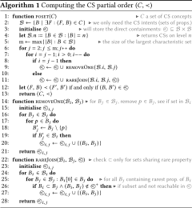

DOI: https://doi.org/10.1145/3178876.3186016
WWW '18: Proceedings of The Web Conference 2018, Lyon, France, April 2018
In this paper, we propose a novel data-driven schema for large-scale heterogeneous knowledge graphs inspired by Formal Concept Analysis (FCA). We first extract the sets of properties associated with individual entities; these property sets (aka. characteristic sets) are annotated with cardinalities and used to induce a lattice based on set-containment relations, forming a natural hierarchical structure describing the knowledge graph. We then propose an algebra over such schema lattices, which allows to compute diffs between lattices (for example, to summarise the changes from one version of a knowledge graph to another), to add diffs to lattices (for example, to project future changes), and so forth. While we argue that this lattice structure (and associated algebra) may have various applications, we currently focus on the use-case of modelling and predicting the dynamic behaviour of knowledge graphs. Along those lines, we instantiate and evaluate our methods for analysing how versions of the Wikidata knowledge graph have changed over a period of 11 weeks. We propose algorithms for constructing the lattice-based schema from Wikidata, and evaluate their efficiency and scalability. We then evaluate use of the resulting schema(ta) for predicting how the knowledge graph will evolve in future versions.
CCS Concepts: • Information systems → Semantic web description languages; Graph-based database models;
ACM Reference Format:
Larry González and Aidan Hogan. 2018. Modelling Dynamics in Semantic Web Knowledge Graphs with Formal Concept Analysis. In WWW 2018: The 2018 Web Conference, April 23–27, 2018, Lyon, France. ACM, New York, NY, USA 10 Pages. https://doi.org/10.1145/3178876.3186016
Graph-based data models [5] have become increasingly common in data management scenarios that require flexibility beyond what is offered by traditional relational databases. Such flexibility is particularly important in Web scenarios, where potentially many users may be involved (either directly or indirectly) in the creation, management and curation of data, where data may be incomplete, properties may have multiple values, and the data schema may be subject to frequent change. This need for flexibility has given rise to the adoption of graph-based models for various applications, including Facebooks's Open Graph Protocol, Google's Knowledge Graph, schema.org, and so forth. In other applications, users may further have control over the schema, allowing not only to edit nodes and edges in the graph, but also to define new types of nodes and edges; an example of such a scenario is the Wikidata knowledge graph [39] – hosted by the Wikimedia Foundation and seen as a source of data to compliment Wikipedia – where users can add new properties and types that can be used to define further data.
While graphs enable increased levels of flexibility in terms of how a given data collection is managed and curated, on the flip-side, this flexibility comes with the inevitable cost of higher levels of heterogeneity, where involved entities may be defined in diverse ways, data may have various levels of (in)completeness, etc. Conceptually understanding the current state of a knowledge graph – in terms of what data it contains, what it is missing, how it can be effectively queried, what has changed recently, etc. – is thus a major challenge: it is unclear how to distil an adequate, high-level description that captures an actionable overview of knowledge graphs.
We thus need well-founded methodologies to make sense of knowledge graphs, where an obvious approach is to define some notion(s) of schema for such graphs. The traditional approach in the Semantic Web has been what Pham and Boncz [31] call the schema first approach: define the schema that the data should follow. The most established language for specifying semantic schemata is RDF Schema (RDFS) [9], which allows for defining the semantics of terms used in the RDF [37] graph-based model; however, such an approach does not help to understand the data that an RDF graph contains since defined terms need not be used and further undefined terms may be used in such data. More recently, validating schemata – such as the Shapes Constraint Language (SHACL) [27] – have been proposed that allow for defining various constraints that compliant RDF graphs must follow; however, the purpose of such schemata is to constrain and validate graphs rather than to gain an understanding of the legacy data contained in a given graph.
An alternative to the schema first approach is the schema last approach [31], which foregoes an upfront schema and rather lets the data evolve naturally; thereafter, the goal is to understand what the legacy graph data contain by extracting high-level summaries that characterise the graph, resulting in a data-driven schema. Due to a growing realisation that traditional notions of schema are not enough, various works have emerged on this topic, trying to extract implicit structure from – and ultimately make sense of – diverse RDF graphs [1, 2, 10, 11, 12, 13, 14, 19, 20, 25, 31, 32, 36]. Such works consider various applications, be it to help users write queries, to build browsing interfaces, to optimise query processing, to identify abstract topics covered, to model topological changes, etc.
In this paper, we propose yet another approach to compute a data-driven schema from such graphs; more specifically, our approach is inspired by formal concept analysis (FCA) and produces a lattice of “concepts” based on the properties (outgoing edge labels) for all entities in the graph (also known as characteristic sets). A key novelty of our approach is to propose an FCA-style framework that can be applied to very large, diverse, graph-structured knowledge-bases. To validate the utility of the FCA-based schema extracted by this framework, as our use-case, we study the problem of summarising the dynamics of a dataset and of predicting future high-level changes. To address this use-case, we propose a novel abstract algebra over FCA-style lattices that allows for computing diffs between two such schemas (through a subtraction operator) and adding such diffs to given schemata in order to project future schema-level changes (through an additional operator).
We apply this framework to compute lattices for 11 versions of the Wikidata knowledge graph, evaluating their suitability for the use-case of predicting future, high-level changes. We select Wikidata as: (1) it provides a history of weekly versions that we can use for evaluating predictions, (2) it is edited by thousands of users, meaning that significant changes are observed week-to-week, (3) the scale and diversity of the dataset offer (to the best of our knowledge) an unprecedented challenge for FCA-style techniques, requiring novel methods. Our results show that the proposed framework can scale to datasets like Wikidata and that it can provide better predictions than a baseline method using a linear model.
Contributions: Our main contributions are as follows: (1) We propose a notion of formal context and concepts for applying FCA-style techniques to RDF graphs. (2) To improve scalability, we propose using an intermediary lattice that does not materialise the full lattice but rather allows for the concepts to be lazily computed (as needed). (3) We propose an algebra for (a) computing a high-level diff between two versions of an RDF graph based on our lattice structures, and (b) adding lattices to predict future changes. (4) We evaluate our methods by extracting the lattices for 11 weekly versions of the Wikidata knowledge graph, presenting performance and scalability results, and assessing the quality of predictions.
Paper outline: Section 2 presents related work in the areas of data-driven schemata, FCA techniques and Semantic Web dynamics. Section 3 presents preliminaries relating to RDF and FCA. Section 4 presents our framework for extracting lattices from RDF graphs, for which Section 5 discusses concrete algorithms. Section 6 describes an algebra for computing diffs and predicting future changes in lattices. Section 7 presents our evaluation before Section 8 concludes.
We now provide an overview of the most pertinent related works in the areas of data-driven schemata for RDF, FCA on the Semantic Web, and modelling dynamics in knowledge graphs.
Data-driven RDF schemata: A variety of works have proposed methods to summarise, profile and/or compute schemata from RDF graphs (as opposed to defining an upfront schema for RDF graphs, per the RDFS [9] and SHACL [27] standards). A common approach is to compute a graph summary based on various notions of quotient graphs [12], which first define an equivalence relation on nodes in the input graph, where each node partition induced by the relation is then considered a node in the quotient graph; such equivalence relations can be defined in terms of, e.g., bisimulations [10, 14, 32, 36], node types [11, 19, 20, 25], isomorphism [12], and so forth. An interesting property of such quotient graphs is that they can (often) preserve some notion of the connectivity of the original graph.
Further approaches rather consider extracting a meta-data summary – such as a VoID description [4] – from the graph [8, 23, 29, 34]; however, such approaches tend to extract statistical descriptions rather than inherent structures from the data (though VoID's dataset partitions [4] do capture some notion of structure).
Other approaches for computing inherent structures from an RDF dataset are based on clustering [1], latent topic analysis [7], association rule mining [2], n-ary relations [31], prototypes [13], formal concept analysis [6, 16, 22], and more besides. The approach we propose falls into the latter category, applying formal concept analysis to RDF graphs; we now discuss such works in more detail.
FCA on the Semantic Web: Our proposal is inspired by methods proposed in the Formal Concept Analysis (FCA) community [33, 40]. In fact, we are far from the first authors to consider applying FCA techniques to a Semantic Web context, where amongst such works we can mention the proposal by Rouane-Hacene et al. [35] for Relational Concept Analysis (RCA), where FCA is applied individually to entities of different types to create a concept lattice for each type; the work by Alam et al. [3] on applying FCA to help explore and assess the completeness of Linked Datasets; the evaluation of Kirchberg et al. [26] for the performance of FCA algorithms applied to Linked Datasets; as well as works by Formica [21] and d'Aquin and Motta [15] for facilitating search and question answering applications over Semantic Web datasets. However, while some of these papers do deal with datasets similar to our own (e.g., DBpedia), all of the papers we have observed apply FCA over closed subsets of datasets, typically including a subset of entities of a particular type. For example, in the performance-focussed paper of Kirchberg et al. [26], the largest datasets considered contain in the order of 35,000 entities, whereas we consider an FCA-style analysis over full (truthy) Wikidata, which describes tens of millions of entities.
Broadening the search to more general FCA methods at large scale, we could find works by Xu et al. [41] and Krajca and Vychodil [28] that (like us) propose to use the distributed MapReduce framework to enhance the scalability of the FCA process; however, the largest dataset considered by Xu et al. [41] contains in the order of 100,000 entities, while the largest considered by Krajca and Vychodil [28] contains in the order of 33,000 entities—still orders of magnitude below our target scale. Hence, at least to the best of our knowledge, no work has considered applying FCA over a dataset as diverse and large as Wikidata; in fact, as we will discuss later, typical FCA methods require adaptations to scale to such levels.
Modelling Dynamics on the Semantic Web: Our main use-case for applying FCA over Wikidata is to model the dynamic behaviour of the dataset and predict future changes. Thus within our related works, we can consider works relating to the modelling of changes in Semantic Web knowledge graphs. Within this area, we can consider, for example, the work by Umbrich et al. [38], who define various types of entity- and document-level changes in Linked Data, looking to see if such changes follow a Poisson distribution. Later work by Käfer et al. [24] proposed the Dynamic Linked Data Observatory to collect weekly snapshots of Linked Data crawled from the Web; analysing various aspects of the dynamics of datasets, they classify websites by the types of changes observed, be they bulk changes, continuous changes, or simply static datasets. The data collected by Käfer et al.’s observatory was later used in follow-up work by, e.g., Dividino et al. [18] for improving cache maintenance. To the best of our knowledge, however, no work has attempted to predict high-level changes in such datasets; rather the focus of such work has been on modelling and analysing historical dynamics.
In order to present a formal framework for the paper, we focus on the RDF data model. However, the techniques and results developed herein generalise to other graph-structured data models [5].
RDF terms and graphs: RDF is a graph-structured model based on three disjoint sets of terms: IRIs (I), literals (L) and blank nodes (B). Claims involving these terms can be organised into RDF triples (s, p, o) ∈ I B × I × I B L,1 where s is called subject, p is called predicate, and o is called object. An RDF graph G is then a finite set of RDF triples, where a triple (s, p, o) ∈ G can be viewed as an edge of the form $s \xrightarrow {p} o$ in a directed edge-labelled graph. The terms used in the predicate position are referred to as properties. We use the term entity to refer to the real-world objects referred to by the subjects of the graph. Given an RDF graph G, for $\bullet \in \lbrace \small{\textrm S},\small{\textrm P},\small{\textrm O} \rbrace$ , we denote by π •(G) the projection of the set of terms appearing in a particular triple position in G; e.g., $\pi _{\small{\textrm S}} (G) := \lbrace s \mid \exists p,o : (s,p,o) \in G \rbrace$ .
Formal contexts and concepts: Formal concept analysis (FCA) is a methodology for extracting a concept hierarchy from sets of entities and their properties [40]. More specifically, the methodology is based on extracting formal concepts from formal contexts. A formal context is a triple X = (E, A, I), where E is a set of entities,2 A is a set of attributes, and I⊆E × A is the incidence: a set of pairs such that (e, a) ∈ I if and only if the attribute a is defined for entity e.
Towards defining formal concepts, we give some initial definitions. Given a formal context X = (E, A, I), for a subset of entities F⊆E, let $[[ F ]] _X := \lbrace a \in A \mid \forall f \in F : (f,a) \in I \rbrace$ ; conversely, for a subset of attributes B⊆A, let $[[ B ]] _X :=\lbrace e \in E \mid \forall b \in B : (e,b) \in I \rbrace$ . Thus, for a set of entities, $[[ \cdot ]]$ takes the set of attributes they all share in common, while for a set of attributes, $[[ \cdot ]]$ takes the set of entities they all share in common. A formal concept is then a pair (F, B) where: (1) F⊆E, (2) B⊆A, (3) $[[ F ]] _X = B$ , and (4) $F = [[ B ]] _X$ . In the formal concept (F, B), the set F is called the extent of the concept while the set B is called the intent of the concept.
In terms of inducing a concept hierarchy, let (F 1, B 1) and (F 2, B 2) be two formal concepts for the formal context X = (E, A, I). We define the partial order ≤ based on set containment of intent such that (F 1, B 1) ≤ (F 2, B 2) iff B 1⊆B 2. Letting C denote the set of all formal concepts in X, then $(E,[[ E ]] _X)$ serves as the bottom context denoting the attributes that all entities share, while $([[ A ]] _X,A)$ serves as the top concept (⊤) denoting the entities using all attributes; since for any c ∈ C it holds that ⊥ ≤ c ≤ ⊤, we can say that (C, ≤) forms a complete lattice, known as the concept lattice. We remark that $[[ E ]] _X$ and $[[ A ]] _X$ can be the empty set in practice, and that $[[ A ]] _X$ , in particular, will very often be empty. Also we note that the same characteristics could be achieved by considering a dual partial order based on set containment of the entities in the extent; however, herein we will be concerned with the attribute-based order. Furthermore, it will be useful to consider a non-transitive version of the ≤ order wrt. C, which we denote by ⪯, such that c≺c′′ iff c < c′′ and there does not exist c′ ∈ C such that c < c′ < c′′.
Characteristic sets: In the section that follows, we will outline a (rather natural) notion of formal context for RDF graphs based on characteristic sets, which were first proposed by Neumann and Moerkotte [30] in the context of query optimisation (more specifically, for cardinality estimation). The characteristic set of an RDF term s ∈ I B L in an RDF graph G is defined as the set of properties associated with that subject s in G; more formally, $\mathsf {cs}(G,s) :=\lbrace p \mid \exists o: (s,p,o) \in G \rbrace$ . The characteristic sets of the graph G are then defined as the set of characteristic sets for all subjects in G; more formally, overloading notation, $\mathsf {cs}(G) :=\lbrace \mathsf {cs}(G,s) \mid s \in \pi _{\small{\textrm S}} (G) \rbrace$ .
We now discuss a general method by which FCA can be used to extract a data-driven schema – in the form of a formal concept hierarchy – from an RDF graph. We begin with a general definition that instantiates a formal context in a natural way from an RDF graph. However, the concept lattice resulting from such a definition is not practical to compute at scale and hence we propose increasingly minimal structures that should be more feasible to compute.
An intuitive instantiation of FCA for RDF is given by constructing a formal context X = (E, A, I) from an RDF graph G considering the subject terms in G to be the entities ($E :=\pi _{\small{\textrm S}} (G)$ ), the properties in G to be the attributes ($A :=\pi _{\small{\textrm P}} (G)$ ), and the incidence to be given by the use of that property as a predicate on the given subject ($I :=\lbrace (s,p) \mid \exists o : (s,p,o) \in G \rbrace)$ . The notion of a formal concept in such a setting then follows naturally from the definition of X.
Consider the following example RDF graph G (in Turtle syntax) containing five subjects and four properties.
We can consider the formal context X = (E, A, I) of this RDF graph as the following matrix (often known as a cross table in the FCA literature) with the row leader denoting A, the column header denoting E , and the matrix ticks denoting I:
Let d, n, s and w denote properties by their initial and A, C, G, P and U denote subjects likewise by their initial. Within this matrix, the maximal projections of incidence sub-matrices filled with $\checkmark$ are then considered to be formal concepts. For example, $(\lbrace \texttt {A} \rbrace ,\lbrace \texttt {d},\texttt {n} \rbrace)$ is not considered a formal concept since it can be extended by the $\texttt {C}$ column maintaining a dense sub-matrix; on the other hand $(\lbrace \texttt {A},\texttt {C} \rbrace ,\lbrace \texttt {d},\texttt {n} \rbrace)$ is a formal concept since it cannot be extended by any row or column while keeping the projected sub-matrix full. Likewise $(\lbrace \texttt {G},\texttt {P} \rbrace ,\lbrace \texttt {w} \rbrace)$ is not considered a formal concept since it can be extended by row $\texttt {n}$ to create the formal concept $(\lbrace \texttt {G},\texttt {P} \rbrace ,\lbrace \texttt {n},\texttt {w} \rbrace)$ .
Along these lines, one can verify that the formal context representing G has six formal concepts C. We can draw the corresponding lattice (C, ≤) as the following Hasse diagram, where lines denote only direct inclusions (i.e., (C, ⪯)) and the top concept ⊤ is drawn at the top of the diagram with lesser concepts then descending:
Intuitively, the idea is that this lattice represents a concept hierarchy distinguishing sets of entities based on the properties by which they are defined; for example, we can see concepts in the lattice relating to directors, actors, writers, and director–actors. We call this the formal concept lattice or FC lattice for short. $\Box$
While the previously defined notion of a formal context and formal concepts for RDF are quite intuitive, there are a variety of potential practical problems to address with the FC lattice.
To start with, for a formal context X = (E, A, I), the upper bound on the number of formal concepts is min(2|E|, 2|A|), bounded by the cardinality of the powerset of entities and attributes (whichever is smaller since the same subset of attributes or entities cannot appear twice). The bound is tight considering, for example, a context where E = A = {1, ..., n} and where I = {(e, a)∣e ≠ a}; now each pair (F, B) such that F∩B = ∅, F∪B = {1, ..., n} is a formal concept, generating the 2 n powerset of concepts (both in extent and intent). However, under the hypothesis that many combinations of properties – such as ex:capital and ex:director – are unlikely to ever occur on a single subject in practice, we can speculate that such exponentiality is unlikely to be encountered in real RDF graphs (though this will require empirical support).
More problematically in practice, the size of individual formal concepts can be prohibitively large, especially with respect to the inclusion of subjects in each such concept: in most RDF graphs the number of unique subjects will far surpass the number of unique properties. In the Wikidata knowledge graph, for example, there are millions of subjects, with each concept being potentially of length $|\pi _{\small{\textrm S}} (G)| + |\pi _{\small{\textrm P}} (G)|$ (e.g, measured in bits) and where each subject s in the graph G can be contained in potentially $2^{|\mathsf {cs}(G,s)|}$ concepts.
For such reasons, given a large-scale dataset as input, from even an initial inspection, it may not be practical to materialise the FC concept lattice. A number of approaches have been developed to deal with this issue by reducing the dimensionality of the concept lattice (creating what is sometimes called an iceberg lattice) by pruning attributes or entities that are rare, or grouping attributes or entities that frequently coincide, and so forth (we refer to Section 5.5 of the survey by Poelmans et al. [33] for further details). We take a rather simpler strategy as described in the following section.
To avoid materialising the entire FC lattice, we rather propose to materialise an intermediary structure from which the concept lattice, or parts there of, can be lazily materialised, as needed. The core intuition is to represent a non-transitive version of the FC lattice such that, for each concept, the intent corresponds precisely to the extent. We call this the characteristic set (CS) lattice since each concept refers to a characteristic set and its extension.
More specifically, given a formal context X = (E, A, I), let $I(e) :=\lbrace a \in A \mid (e,a) \in I \rbrace$ denote the attributes of entity e ∈ E. We say that (F, B) is a CS concept of X if (1) F⊆E, (2) B⊆A, (3) for all e ∈ F, it holds that I(e) = B, and (4) for all e ∈ E∖F, it holds that I(e) ≠ B. Equivalently, (F, B) is a CS concept of G iff B is a characteristic set of G and F is the set of all subjects in G with characteristic set B.
However, letting C denote the set of all CS concepts of X and considering the intent-based ordering ≤ as before, we must be careful: namely the partially ordered set (C, ≤) is no longer a lattice since the previous top formal concept may not be a CS concept (if no subject uses all properties) while the bottom formal concept will never be a CS concept (since no subject has no properties). Hence to return to a complete lattice, we can create new top and bottom CS concepts to return to a complete CS lattice.
Let us return to the FC lattice depicted in Example 4.1. The corresponding CS lattice is then:
The CS lattice has a number of practical benefits when compared with the previously defined FC lattice.
First, in many use-cases, it may be useful to group subjects by the exact set of properties that they are incident with. To give an intuition of such a case, we will later use these lattices to compute probabilistic predictions of how a particular subject will evolve in a future version of the RDF graph in terms of what properties are most likely to be added/deleted for that subject; here we need to analyse the evolution of other subjects with precisely that set of properties in observable historical data. For this, the CS lattice will be a better alternative than the corresponding FC lattice.
Second, the size of this CS lattice is now bounded by the number of subjects $|\pi _{\small{\textrm S}} (G)|+2$ since only one extent can contain a particular subject (with 2 referring to the top and bottom concepts). This bound is tight if each subject is associated with a different characteristic set and no subject contains all properties. Intuitively, the CS lattice no longer contains “intermediary” concepts; for instance, in the previous example, while there was a formal concept associated with the intent $\lbrace \texttt {n} \rbrace$ , there is no “strict” CS concept with that intent since no subject has precisely the set of properties $\lbrace \texttt {n} \rbrace$ ; if it were not needed as the bottom concept of the CS lattice, such a concept (and other such intermediary concepts) would not be included. Taking perhaps a better example, if we consider again the formal context E = A = {1, ..., n}, and I = {(e, a)∣e ≠ a}, the CS lattice will contain n + 2 concepts encoding precisely I and the required top (∅, A) and bottom (∅, ∅) concepts. Likewise, given that each subject appears in one extent, the average length of the CS concepts is greatly reduced (though the upper bound is not).
We highlight that the CS lattice directly encodes the incidence I of the formal context and (assuming all entities and attributes appear in the incidence) thus contains sufficient information to recompute the FC lattice, allowing to materialise formal concepts in a lazy manner—hence why we referred to the CS lattice as an “intermediary structure” at the outset of the section.
The number of subjects described by large-scale knowledge graphs such as Wikidata or DBpedia is often in the order of millions, while the number of properties rather tends to be in the order of thousands. Hence we can greatly reduce the overall (e.g., in-memory) size of the lattice by replacing the extents in each concept with their cardinality. In other words, given a lattice (C, ≤), we define its $\#$ -lattice as $(C^\#,\le)$ where $C^\# :=\lbrace (|F|,B) \mid (F,B) \in C \rbrace$ . This may be sufficient for a number of use-cases, such as for estimating the cardinalities of conjunctive queries [30]. We refer to such lattices as #-lattices, where the definition applies to either FC #-lattices or CS #-lattices; in the following, we exemplify the latter.
The CS #-lattice corresponding to Example 4.2 is as follows (replacing the extent with its cardinality):
We highlight that #-lattices contain the same number of concepts as their full-extent versions; furthermore, the CS #-lattice contains sufficient information to recreate the FC #-lattice as needed.
We remark that the previous notions of lattices form a natural “base” for describing an RDF graph as part of a data-driven schema. However, one can consider a number of variations on this theme:
While such variations and extensions would be interesting to investigate, we consider them as part of future work, with a particular challenge being to keep the size of the resulting lattice manageable.
We now present an overview of the methods we propose for computing the concept lattices previously described. Given a (potentially very large) RDF graph G, our strategy is as follows: (1) We first compute the CS concepts; given that here we must process the entire graph, we propose an algorithm based on the MapReduce framework to enable horizontal scaling. (2) We then compute the hierarchy over these CS concepts to generate the CS lattice; more precisely, we compute the direct containments and add the top and bottom elements, giving us the CS lattice for the RDF graph. (3) We do not directly materialise the FC lattices; rather these will be materialised as needed for a particular use-case.
We compute the characteristic sets from the RDF graph using an algorithm for the distributed MapReduce framework [17], which consists of two main phases: a map phase where sets of key–value pairs are assigned to machines based on their key, and a reduce phase, where values with the same key are grouped, aggregated and processed to produce an output on the local machine. Given an input RDF graph as a set of triples, the algorithm for computing CS concepts then consists of two high-level MapReduce tasks:
While conceptually straightforward, in practice we encountered a litany of errors in trying to run these tasks over Wikidata on rented clusters; in particular, we frequently encountered out-of-disk errors, expensively slow runtimes, load issues, and so forth. Hence we implemented and tested a number of improvements:
Some brief details on performance will be provided in Section 7.
The next challenge is to compute the CS lattice based on the subset partial order of the set of CS concepts C computed in the previous stage; more specifically, we compute direct containments within C. We can then (trivially) add a top and bottom concept, as previously described, to compute the final CS lattice. In this phase, we assume that the intents (i.e., the characteristic sets themselves, not the lists of subjects) fit in memory since the partial order underlying the CS lattice only relies on the intents of the CS concepts. Indeed, as described later in the experimental section, although over 2 million unique characteristics sets are computed for Wikidata, with numeric compression, these fit in 16GB of memory without issue.
In order to compute the CS lattice from n characteristic sets, the simplest algorithm we could consider is to perform ${n}\atopwithdelims (){2}$ pairwise subset comparisons, but clearly this would not be practical for n > 2,000,000, and likewise we would compute (C, ≤) (i.e., all transitive containments) rather than (C, ⪯) (the direct containments).

Instead we adopt the approach outlined in Algorithm 1 . Here we only consider the intents of the concepts: the characteristic sets themselves, denoted $\mathcal {B}$ . We stratify these characteristic sets into levels based on their cardinality, where level i is the set of all characteristic sets with cardinality i (denoted $\mathcal {B}\!.i$ ). Note that as per Example 4.2, a direct containment may “skip” a level; hence we must check all pairs of levels. Starting with j = 2 and ending when j = m (for m the max number of levels), we compare all characteristic sets on level j to all on levels j − 1 to 1; in other words, we compare levels in the order $(\mathcal {B}\!.2,\mathcal {B}\!.1), (\mathcal {B}\!.3,\mathcal {B}\!.2), (\mathcal {B}\!.3,\mathcal {B}\!.1), \ldots , (\mathcal {B}\!.m,\mathcal {B}\!.1)$ , which helps avoid returning indirect containments. For comparing two levels i and j (for i < j); we have two algorithms to choose from:
In terms of the condition for choosing one algorithm or the other, note that if we considered a generalised method removeN for n = j − i ≤ N, we would end up having to perform ${j}\atopwithdelims (){n}$ lookups on the $\mathcal {B}\!.i$ index, which would be problematic for $n \approx \frac{j}{2}$ . Empirically we found that removeOne was the only case faster than rareJoin.
Once we have the partially ordered set returned by Algorithm 1, to derive the final CS lattice, we need to compute the extent and the top and bottom concepts. Given that the extent (computed by the MapReduce framework) does not fit in-memory, we simply leave it indexed on-disk. To complete the CS lattice, we add the top concept $([[ A ]] _X,A)$ for A the set of all properties and $[[ A ]] _X$ the set of subjects with all properties; and the bottom concept (∅, ∅).
We could intuitively consider the FC/CS lattice as encoding the possible paths of evolution of entities in a knowledge graph: in a monotonic knowledge graph where properties are continuously added to entities (often the case for incomplete knowledge-graphs where new information is constantly being added), we could consider new entities as beginning at the bottom of the lattice and evolving towards the top of the lattice. Referring back to Example 4.2, for instance, we could consider new entities as first having ex:name defined, where they can then take a path towards being a director, an actor, or a writer; if already an actor or director, they may become an actor–director, and so forth. The cardinality of the extent likewise encodes information about the popularity of certain paths along which entities evolve. Of course, if the knowledge graph is not monotonic, entities may also descend the lattice as properties are removed. In any case, we can see the lattice as somehow encoding possible evolutions of an entity.
Taking this one step further, if we have the lattices for two different versions of a knowledge graph, we can apply a diff to see high-level changes between both versions of the data. Furthermore, given such a diff between two versions, we could further consider adding that diff to the most recent version to try predict future changes. We now capture precisely these intuitions with an algebra for computing diffs between lattices and adding diffs to lattices.
Let Xi = (Ei , Ai , Ii ) and Xj = (Ej , Aj , Ij ) be formal contexts for two versions of an RDF graph (i being some version before j), and let $\mathcal {L}_i :=(C_i,\le)$ and $\mathcal {L}_j :=(C_j,\le)$ be the two corresponding CS lattices, where we remark that ≤ is defined for Ci ∪Cj (being based on a general notion of set containment). Further let $E :=E_i \cup E_j$ and $A :=A_i \cup A_j$ . We can define a lattice diff Δ j, i ⊆2 A × E × 2 A as a set of triples denoting for each entity in E its intent in Cj and in Ci . More specifically, we say that $\Delta _{j,i} = \mathcal {L}_j - \mathcal {L}_i$ iff
At the top of Figure 1, we provide an example of the diff computed between two lattices, where $\mathcal {L}_1$ is the CS lattice previously introduced in Example 4.2 and $\mathcal {L}_2$ is taken as an example of how the lattice evolves in the next version of the dataset. The diff is then a directed edge-labelled graph where the nodes are the sets of characteristic sets and the edges are labelled according to the entities that move between the sets from version 1 to 2. $\Box$
As before, we can also consider a cardinality version of a diff $\Delta ^\#_{j,i} \subseteq 2^A \times \mathbb {N} \times 2^A$ where instead of computing the entities that move between characteristic sets, we simply count the number of entities that move. Thus given Δ j, i , let $\Delta _{j,i}(B_j,B_i) :=\lbrace e : (B_j,e,B_i) \in \Delta _{j,i}\rbrace$ ; now we can define $\Delta _{j,i}^\# :=\lbrace (B_j,n,B_i) : n = |\Delta _{j,i}(B_j,B_i)| \rbrace$ .
Given two CS lattices $\mathcal {L}_1$ and $\mathcal {L}_2$ referring to two versions of an RDF graph, we could consider using the diff $\Delta _{2,1} = \mathcal {L}_2 - \mathcal {L}_1$ to predict a future version of the dataset through an operation such as $\mathcal {L}_{[3]} = \mathcal {L}_2 + \Delta _{2,1}$ . However, such an operation would not make much sense since specific entities in Δ 2, 1 have already reached their destination. Instead we can consider predicting the CS #-lattice $\mathcal {L}_{[3]}^\#$ by defining the following algebraic operation: $\mathcal {L}_{[3]}^\# = \mathcal {L}_2^\# + \Delta _{2,1}^\#$ (or in other words, $\mathcal {L}_{[3]}^\# = \mathcal {L}_2^\# + (\mathcal {L}_{2}^\# - \mathcal {L}_{1}^\#)$ ). More generally, given $\Delta ^\#_{j,i} = \mathcal {L}^\#_j - \mathcal {L}^\#_i$ , let $\mathcal {L}^\#_k$ be derived from a third version of the graph; we now wish to “add” the changes between the i th and j th versions to the k th version to predict the (k + j − i)th version.3 We will thus define the operation $\mathcal {L}^\#_k + \Delta ^\#_{j,i}$ as producing a #-lattice $\mathcal {L}^\#_{k,j,i} :=(C^\#_{k,j,i},\le)$ predicting $\mathcal {L}^\#_{[k + j - i]}$ ; we are left to define $C^\#_{k,j,i}$ .
A natural idea is to sum the incoming entities and subtract the outgoing entities for each characteristic set between versions i and j and add that total to version k; for example, let us say that n entities move from some characteristic set {p, q} in version i to {p, q, r} in version j; then starting with $C^\#_{k}$ , we could add n to the number of entities for {p, q, r} and remove n from {p, q} when computing $C^\#_{k,j,i}$ . But what if $C^\#_{k}$ does not have n entities in the source characteristic set {p, q} to “move” to {p, q, r}? Furthermore, what if more entities should move from {p, q} to another set {p, q, s}?
To resolve such issues, rather than apply transitions in terms of absolute numbers of entities, we apply them in terms of the ratio of entities that move from the source characteristic set. Formally, first let $\mathcal {B}_i$ , $\mathcal {B}_j$ , $\mathcal {B}_k$ denote the characteristic sets in $C^\#_i$ , $C^\#_j$ , $C^\#_k$ , let $C^\#(B)$ denote m such that $(m,B) \in C^\#$ (or 0 if no such value for m exists), and let $\Delta ^\#_{j,i}(B_j,B_i)$ denote n such that $(B_j,n,B_i) \in \Delta ^\#_{j,i}$ (or 0 if no such value for n exists). Next we define the ratio of entities of Bi moving to Bj as $\rho _{j,i}(B_j,B_i) :=\frac{\Delta ^\#_{j,i}(B_j,B_i)}{C_i^\#(B_i)}$ if $C_i^\#(B_i) \ne 0$ ; for convenience, we also define the ratio for characteristic sets not in $\mathcal {B}_i$ to indicate no change where, in such a case (i.e, where $C_i^\#(B_i) = 0$ ), if Bi = Bj then $\rho _{j,i}(B_j,B_i) :=1$ , otherwise $\rho _{j,i}(B_j,B_i) :=0$ . Finally, we define $C^*_{k,j,i} :=\lbrace (B, \sigma (B)) \mid B \in \mathcal {B}_j \cup \mathcal {B}_k, B \ne \emptyset \text{ and }\sigma (B) {\gt} 0 \rbrace$ , where σ(B), in turn, is defined as:4
At the bottom of Figure 1, we provide an example of adding a #-diff to a #-lattice to predict the next #-lattice (with $\mathcal {L}^\#_2$ and $\Delta ^\#_{2,1}$ based on the top of the figure). Take the case of $\lbrace \texttt {n},\texttt {w} \rbrace$ : in $\mathcal {L}^\#_2$ this characteristic set has 4 entities, of which, $\Delta ^\#_{2,1}$ states that half (2) should stay in $\lbrace \texttt {n},\texttt {w} \rbrace$ while half (2) should go to $\lbrace \texttt {n},\texttt {s},\texttt {w} \rbrace$ ; furthermore, 3 fresh entities are defined for $\lbrace \texttt {n},\texttt {w} \rbrace$ ; hence the predicted value for $\lbrace \texttt {n},\texttt {w} \rbrace$ is 5. Consider on the other hand $\lbrace \texttt {n},\texttt {s},\texttt {w} \rbrace$ : in $\Delta ^\#_{2,1}$ it has no outgoing edges since it was not present in $\mathcal {L}_1$ , hence the one entity in $\mathcal {L}^\#_2$ remains and 2 are added from $\lbrace \texttt {n},\texttt {w} \rbrace$ as aforementioned; thus the predicted value is 3. Finally, we highlight that $\lbrace \texttt {d},\texttt {n},\texttt {s} \rbrace$ is predicted empty: though $\Delta ^\#_{2,1}$ suggests that entities should be added from $\lbrace \texttt {n},\texttt {s} \rbrace$ , no such entities are available in $\mathcal {L}^\#_2$ , and the entity previously in $\lbrace \texttt {d},\texttt {n},\texttt {s} \rbrace$ moves to $\lbrace \texttt {d},\texttt {n} \rbrace$ (while the previous entity in $\lbrace \texttt {d},\texttt {n} \rbrace$ is deleted, leaving one entity in $\lbrace \texttt {d},\texttt {n} \rbrace$ ). $\Box$
These algebraic operations then allow to predict future high-level changes in the RDF graph where, in particular, the #-diff encodes a prediction on how entities will evolve and move between characteristic sets. This has various concrete use-cases: e.g., given a particular subject in G 2 – the second version of the dataset – we may wish to know the probability that it will change characteristic sets – either adding or removing unique incident properties – in the next version G 3, which we can compute based on Δ 2, 1 as described.
A natural generalisation of this idea is to consider the “transitive counts” of the ancestors of a characteristic set, where rather than considering a fixed subject, we consider the evolution of all subjects with (at least) a given characteristic set (in line with the original FC lattice). This is useful, for example, to predict how the results for a query on those properties might change in the next version. To compute such a prediction, we can simply take the predicted $\mathcal {L}^\#$ lattice and sum the non-overlapping counts of its ancestors.
Finally, note that where n > 2 past versions of the dataset are available, we may consider computing a mean #-diff by simply computing the n − 1 #-diffs possible and then taking the average of their transition values; the intuition here is to take the “mean” transition of entities across several pairs of versions, which may smooth the effect of bulk edits between a given pair of versions.
The prior discussion raises a number of questions that can only be validated empirically; in particular, we are interested in addressing the following primary questions: (1) Can we compute the CS concepts at scale? (2) Can we efficiently compute the CS lattice? (3) How large is the CS lattice produced? (4) How accurately can our #-diffs predict future changes? Along these lines, we now present the results of experiments for the Wikidata knowledge graph.
Data. We consider the “truthy” RDF dumps of Wikidata – without qualifier information – spanning 11 weeks from 2017-04-18 to 2017-06-27. The first version has 1,102,242,331 triples, 54,236,592 unique subjects and 3,276 unique properties, while the final version has 1,293,099,057 triples (+17%), 57,197,406 unique subjects (+5%) and 3,492 unique properties (+6%). Hence we see that the dataset is growing, particularly in the volume of triples (with new triples often using existing properties on existing subjects).
Computing CS concepts. We use a Hadoop cluster with a single namenode and a varying number of datanodes. All machines had a 2.20GHz Xeon E5-2650 v4 CPU, 8GB of RAM and a 500G SSD. We used JDK 1.8.0_121, Apache Hadoop 2.7.3 and Apache Jena 3.2.0 for parsing. We ran a variety of experiments testing different combiner strategies, compression techniques, varying number of reducers, and so forth. For reasons of space, we do not present the full details of these experiments except to note that the fastest configuration involved processing data with numeric ID compression (more than halving the processing time including compression time on a single machine) and with a concatenation-based combiner, we save an additional 12.5% of computational time. In experiments with 4, 8, 16 and 32 machines, we found that after 8 machines, little gain in wall-clock computation time was observed, perhaps due to skew in the characteristic set distribution. For the largest dataset, numeric compression took 01:21:05 (HH:MM:SS), while Task 1 took 01:06:38 and Task 2 took 00:07:15; the total (wall-clock) time for computing the CS concepts was thus 02:34:58.
The total number of characteristic sets varied from 2,004,910–2,118,109 between the earliest and latest versions of Wikidata considered. The smallest characteristic sets contained one property, with the largest containing 148–154 properties across the versions; the median number of properties was 18 for all versions.
Computing CS lattices. We use a single machine for computing the CS lattice with a 2.5GHz Intel Core i7-6500U CPU, 16GB RAM and a 256 GB SSD. Using the strategy outlined in Algorithm 1, the runtimes for computing the lattice varied from 06:57:59–07:51:07 for the least-to-most recent version, with the number of edges varying from 78,046,423–86,848,506. This corresponds to a mean indegree (or equivalently outdegree) of ∼ 39–41 edges in the CS lattice.
Quality of predicted #-lattices. Finally, we turn to testing the quality of the future #-lattices we predict. For this, we run experiments where we train on w previous weekly versions of the dataset to predict the next version of the #-lattice. Given that we have 11 versions, we train on 1 ≤ w ≤ 6 versions to ensure at least 5 (11 − w) predicted lattices for each experiment. To measure the quality of the prediction, we compute the Root Mean Square Error (RMSE) and the Mean Average Error (MAE) between the predicted #-lattice and the real lattice. Note that RMSE = MAE indicates that prediction errors have consistent magnitude (e.g., each prediction is out by a constant factor ± n), while RMSE ≫ MAE indicates that some errors have much larger magnitude than the average case (which we would expect given that some characteristic sets have much higher cardinality and much more dynamic behaviour than others).
In each case, we consider two algorithms: (1) a baseline algorithm that, independently for each CS in the (union of) the w previous #-lattices, applies a linear model (LM) – more specifically, using linear regression with least squares fitting – over the previous counts for that CS to predict the count in the subsequent version; and (2) using our diff algebra (Δ) averaged over the w previous diffs and added to the latest version to derive the prediction.
We then apply two experiments. The first experiment considers the counts of subjects with an exact characteristic set, evaluating the quality of prediction given an exact CS, for example, to predict how a particular subject might change. The results are shown in Table 1, where we see that our diff algebra (Δ) outperforms the baseline method (LM) in all cases, with smaller error by a considerable margin. We attribute this to the fact that Δ considers where entities come from, whereas LM does not: for example, if we consider two weeks of training data where a bulk edit is made between the two weeks adding a property $\texttt {p}$ to each entity with CS $\lbrace \texttt {q},\texttt {r}\rbrace$ , LM will predict the same increase again in $\lbrace \texttt {p},\texttt {q},\texttt {r}\rbrace$ for the next week whereas Δ will recognise that there are no “source” entities left in $\lbrace \texttt {q},\texttt {r}\rbrace$ and will not predict such an increase again. We also see that considering more weeks improves the quality of prediction for Δ: considering further training data allows to smooth out the effect of certain bursty (e.g., bot) edits between recent versions. In both cases, RMSE ≫ MAE, indicating that most predictions of CS cardinalities are accurate, but a few predictions have large errors.
The second experiment we run considers the counts of subjects with at least a given characteristic set (but that may have further properties); a concrete use-case would be to predict how the results for a query with those properties may change. First, we note that the overall error rises considerably, which is to be expected as the absolute (transitive) counts likewise increase considerably. As before, we see that the Δ-based predictions considerably outperform the LM baseline, and that the errors decrease for Δ as further weeks of training data are considered for the prediction.
Evaluation material: Source code and other evaluation materials are available at: https://github.com/larryjgonzalez/rdf_dynamics.
| w | LM (rmse) | LM (mae) | Δ (rmse) | Δ (mae) |
|---|---|---|---|---|
| 2 | 167.2 | 0.5697 | 25.26 | 0.1286 |
| 3 | 173.9 | 0.5595 | 19.15 | 0.1134 |
| 4 | 186.6 | 0.6051 | 17.71 | 0.1078 |
| 5 | 196.0 | 0.6624 | 17.31 | 0.1020 |
| 6 | 202.9 | 0.6842 | 15.62 | 0.0941 |
| w | LM (rmse) | LM (mae) | Δ (rmse) | Δ (mae) |
|---|---|---|---|---|
| 2 | 1477.8 | 177.0 | 264.2 | 6.19 |
| 3 | 1458.9 | 162.4 | 209.1 | 5.09 |
| 4 | 1535.6 | 178.8 | 185.7 | 4.50 |
| 5 | 1398.8 | 123.4 | 176.7 | 4.15 |
| 6 | 1357.8 | 59.6 | 145.8 | 3.67 |
In this paper, we have presented a framework for computing a data-driven schema from large-scale knowledge graphs based on Formal Concept Analysis. Given that FCA is challenging to apply at scale, we proposed more lightweight structures that similarly provide a concept hierarchy based on a lattice of characteristic sets. We then discussed algorithms for extracting these characteristic sets and building the resulting lattices in a scalable and efficient manner. As a concrete use-case, we presented an algebraic method by which these lattices can be used to predict high-level changes in the dataset. Our evaluation over 11 weeks of Wikidata versions – each with more than 1 billion triples, 50 million subjects and 3 thousand properties – demonstrates the feasibility of our approach. Furthermore, we validated the quality of predictions made by our algebraic approach against a linear-model baseline.
There are a number of future directions for follow-up work. Aside from Wikidata, it would be interesting to conduct further experiments on other knowledge graphs with different scales and different types of dynamic behaviour. We also wish to investigate other applications for our proposed schema, including query processing, user interfaces, etc. Other variations of schema could also be explored, including, for example, concepts that encode type values or multiplicity, or quotient graphs based on characteristic sets. In general, we foresee much potential in the area of deriving data-driven schema from emergent knowledge graphs.
Acknowledgements: We thank Pablo Barceló and Pablo Muñoz for discussions that inspired this topic. We also thank Romana Pernischova and the anonymous reviewers for their comments. This work was supported by the Millennium Nucleus Center for Semantic Web Research, Grant No. NC120004; by Fondecyt Grant No. 1181896; by the German Research Foundation (DFG) within the Collaborative Research Center SFB 912 (HAEC); and by Emmy Noether grant KR 4381/1-1 (DIAMOND).
1We use, e.g., IB as a shortcut for I ∪ B.
2In the FCA literature, it is more typical to refer to a set of objects; we avoid this nomenclature since it clashes with the notion of an object in an RDF triple.
3In practice, this assumes versions with regular periodicity, e.g., weekly versions; often k = j with both referring to the latest version from which predictions are made.
4round(·) denotes rounding towards positive infinity (applying ceiling for $\frac{2n + 1}{2}$ ).
This paper is published under the Creative Commons Attribution 4.0 International (CC-BY 4.0) license. Authors reserve their rights to disseminate the work on their personal and corporate Web sites with the appropriate attribution.
WWW '18, April 23-27, 2018, Lyon, France
© 2018; IW3C2 (International World Wide Web Conference Committee), published under Creative Commons CC-BY 4.0 License. ACM ISBN 978-1-4503-5639-8/18/04.
DOI: https://doi.org/10.1145/3178876.3186016